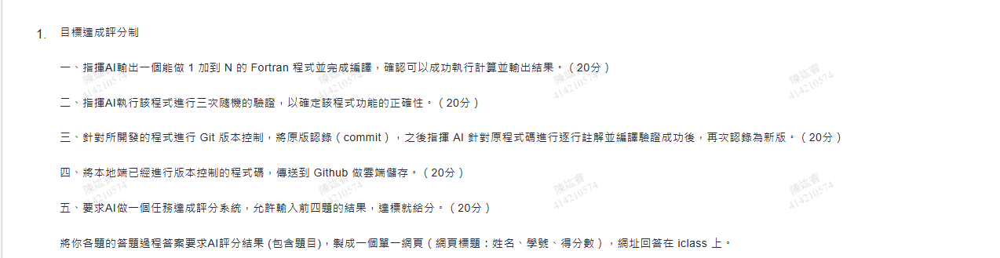
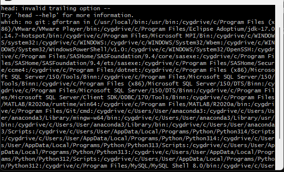
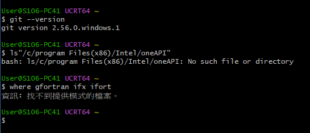
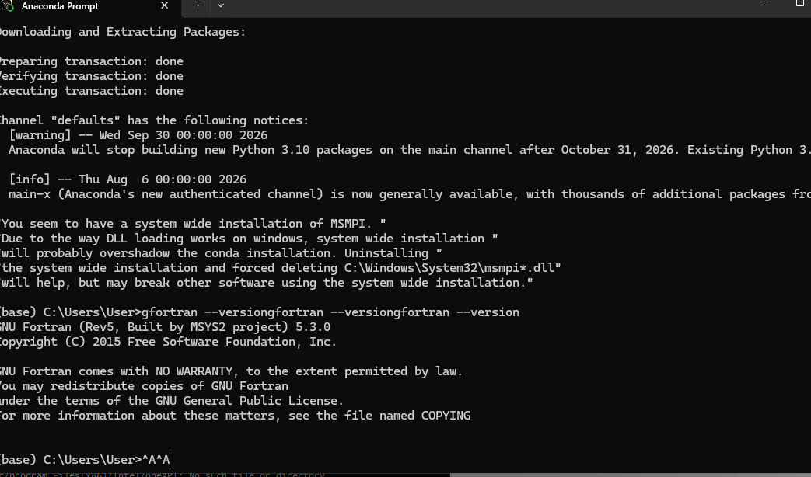
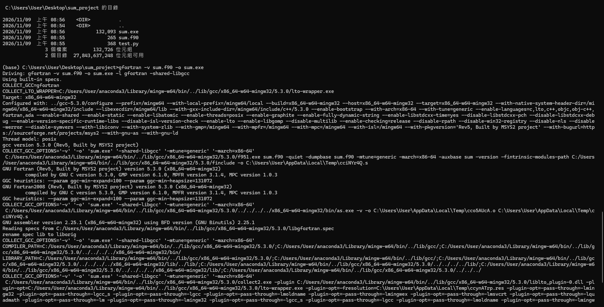
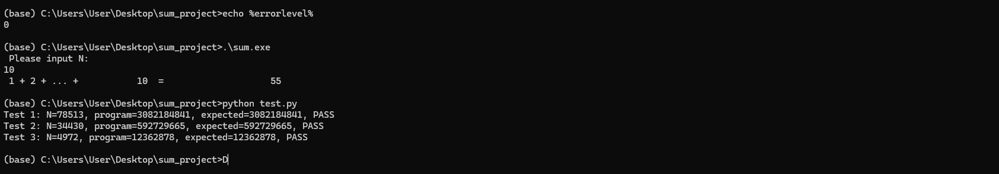
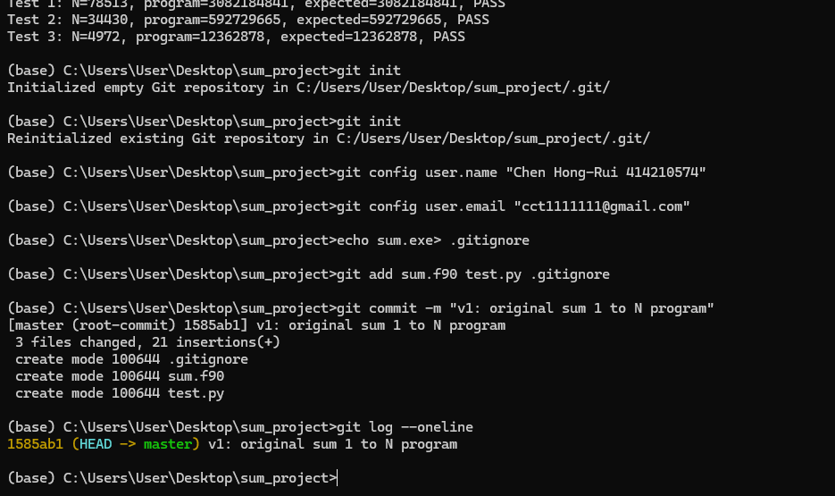
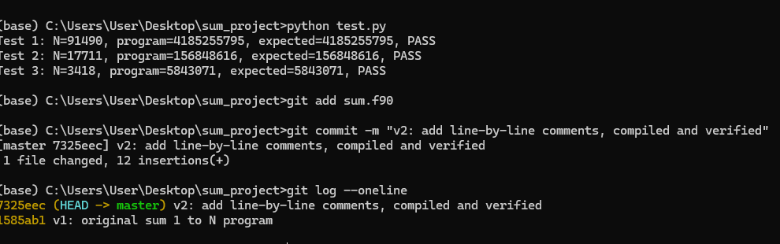

陳竑睿 414210574
數值方法：目標達成評分制作業 總分 100 分
作業題目

一、指揮 AI 寫出 1 加到 N 的 Fortran 程式並編譯執行（20 分）
過程：AI 確認學校電腦沒有 Fortran 編譯器，指揮我用 Anaconda 安裝 gfortran 5.3.0（conda install -c msys2 m2w64-gcc-fortran），再寫出程式 sum.f90。
program sum_1_to_n
implicit none
integer :: n, i
integer(kind=8) :: total
write(*,*) 'Please input N:'
read(*,*) n
total = 0
do i = 1, n
total = total + i
end do
write(*,*) '1 + 2 + ... + ', n, ' = ', total
end program sum_1_to_n> gfortran sum.f90 -o sum.exe
> .\sum.exe
Please input N:
10
1 + 2 + ... + 10 = 55結果：輸入 N = 10 得到 55，與 10×11/2 = 55 相符。達標





二、指揮 AI 執行三次隨機驗證（20 分）
過程：AI 寫了 test.py，隨機產生 N，把程式輸出和公式 N(N+1)/2 比對。
> python test.py
Test 1: N=78513, program=3082184841, expected=3082184841, PASS
Test 2: N=34430, program=592729665, expected=592729665, PASS
Test 3: N=4972, program=12362878, expected=12362878, PASS結果：三次隨機測試全部通過。達標
三、Git 版本控制：原版 commit，逐行註解後再 commit（20 分）
過程：git init 後把原版記錄為 v1；AI 對每一行加上中文註解，重新編譯並再跑三次隨機測試（N = 91490、17711、3418 全部 PASS），記錄為 v2。
> git log --oneline
7325eec (HEAD -> master) v2: add line-by-line comments, compiled and verified
1585ab1 v1: original sum 1 to N program結果：兩個版本都已記錄。達標


四、把本地端的版本庫上傳到 GitHub（20 分）
過程：在 GitHub 建立 repository，git remote add origin 後 git push。
> git remote add origin https://github.com/chr-061224/sum_project.git
> git branch -M main
> git push -u origin mainGitHub 網址：https://github.com/chr-061224/sum_project 達標
五、AI 製作的任務達成評分系統（20 分）
輸入前四題的結果，系統會自動判斷是否達標並給分。下面已填入本次作業的實際結果，按「評分」就會重新計算。
| 題目 | 判斷標準 | 得分 |
|---|